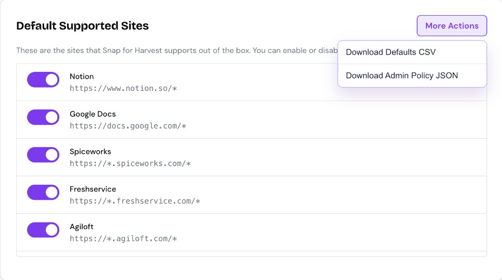

Google Admin Guide
Deploy Snap for Harvest across your organization with Chrome Browser management and configure default sites with managed policy.
What Admin Policy Controls
Snap for Harvest supports managed policy so IT administrators can:
- Define organization default sites
- Define organization custom sites (force-enabled for all users)
- Lock default site toggles (users cannot disable)
- Allow or disable user custom-site editing
Policy-managed settings take priority over local user settings.
Getting Policy Templates from the Extension
The extension can generate ready-to-use policy JSON templates based on your current configuration:
- Open the extension Options page
- Go to the Default Supported Sites tab
- Click More Actions dropdown in the top-right
- Choose one of:
- Download Defaults CSV — Review the current default site catalog
- Download Admin Policy JSON — Get a policy template pre-filled with defaults

Tip: Download the Defaults CSV first to review which sites ship by default, then use the Admin Policy JSON as your starting template.
Download Standalone Template
You can also download a ready-to-use policy template with example sites:
Configuring Policy in Google Admin Console
Step 1: Navigate to Chrome Extension Management
- Sign in to Google Admin Console
- Go to Devices → Chrome → Apps & extensions
- Select the organizational unit where Snap for Harvest is deployed
- Find Snap for Harvest in your extension list

Step 2: Add Managed Configuration
- Click on the extension to expand settings
- In the Policy for extensions section, paste your JSON policy
- Click Save

JSON Policy Template
Download the template to see the correct format for Google Admin Console:
Note: Google Admin expects policy values wrapped in "Value" objects. The template includes example sites and default settings you can customize.
Recommended Rollout Modes
Flexible Mode (Recommended First)
"allowUserCustomSites": { "Value": true },
"lockDefaultSites": { "Value": false }This gives IT a baseline configuration while allowing users to add their own custom sites. Best for piloting or when teams have different tools.
Strict Mode (Locked-Down Environments)
"allowUserCustomSites": { "Value": false },
"lockDefaultSites": { "Value": true }This centralizes all site controls in IT policy. Users cannot add, remove, or import custom sites, and cannot toggle default sites.
Policy Keys Explained
orgDefaultSites
Array of default sites to add or override for the organization.
pattern(string, required): URL patternname(string, optional): Display nameenabled(boolean, default: true): Whether site is activelocked(boolean, default: false): Whether users can toggle on/off
orgCustomSites
Array of custom sites force-enabled for all users.
pattern(string, required): URL patternname(string, optional): Display name
allowUserCustomSites
Boolean. If false, users cannot add, remove, or import custom sites.
lockDefaultSites
Boolean. If true, all default site toggles are locked and users cannot enable/disable them.
Verifying Policy Deployment
- On a managed Chrome browser, navigate to
chrome://policy - Search for Snap for Harvest or filter by extension policies
- Verify your policy keys appear with correct values
- Open the extension options and confirm locked/policy-managed badges appear


Troubleshooting
Policy seems ignored
- Confirm extension is force-installed or allowed for target users
- Verify JSON policy is valid (no syntax errors)
- Wait for policy refresh (can take a few minutes) and restart browser
- Confirm users are in the intended org unit/group
- Check
chrome://policyon a managed device
Users cannot add custom sites
Check whether allowUserCustomSites is set to false by policy.
Default toggles are disabled
Check whether lockDefaultSites is set to true, or specific default entries are marked with "locked": true.
Common Use Cases
Force-enable internal tools for all employees
Add your internal ticketing, CRM, or project-management tools to orgCustomSites so they're available for everyone immediately.
Disable consumer tools in enterprise environments
Set specific default sites to "enabled": false and "locked": true to prevent usage on certain platforms.
Centralized site management
Set allowUserCustomSites: false and define all approved sites via orgDefaultSites and orgCustomSites.